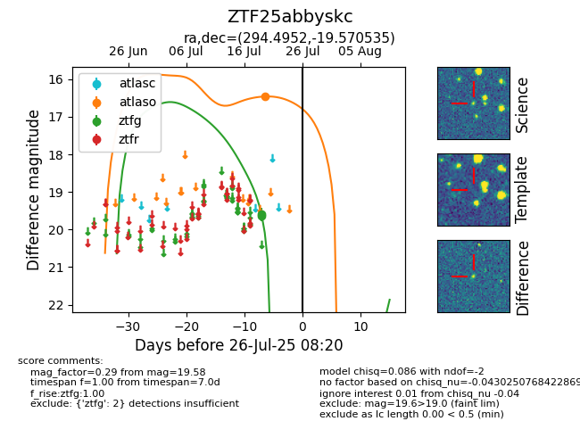

Target ZTF25abbyskc at 2025-07-26 08:20, see:
FINK: fink-portal.org/ZTF25abbyskc
Lasair: lasair-ztf.lsst.ac.uk/objects/ZTF25abbyskc
ALeRCE: alerce.online/object/ZTF25abbyskc
alt names
ZTF25abbyskc (ztf,fink)
coordinates:
equatorial (ra, dec) = (294.4952,-19.57054)
galactic (l, b) = (20.0262,-18.77611)
photometry
last atlaso=16.46, ztfg=19.58
1 atlaso, 2 ztfg detections
